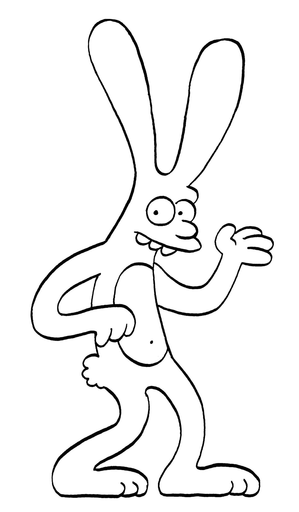

Major Works: Life in Hell (1977–2012),The Simpsons (1989–present), Futurama (1999–2003, 2010–13), Disenchantment (2018-present)
Run-time: Still running
Education: Studied Journalism at Evergreen State College, graduated in 1977
Co-creators: James L. Brooks, Sam Simon
Groening worked as a music journalist until he decided to pursue his artistic interests, starting first with the comic Life is Hell. Some of his main inspirations for his art were Walt Disney and Charles M. Schulz. After being asked by James L. Brooks to make the Life in Hell comic a TV strip for the Tracey Ullman Show, Groening decided to make the Simpsons, an original show based on his own family.
Life in Hell

Major Characters: Binky, Akbar, Jeff,
Major Topics: worklife, life in Los Angeles
Release Dates: In 1977, Groening self-published a comic book and sold them at a local record store before they were taken on by Wet Magazine in 1978.
Run-time: 1977-2012
Number of Installments: 1,669 (in over 250 publications)
Notable Fans: James L. Brooks (who later prompted Groening to create The Simpsons)
The Simpsons
Major Characters: Homer, Marge, Lisa, Bart, and Maggie Simpson, Milhouse VanHouten, Principal Skinner, Sideshow Bob, Krusty the Klown
Major Topics: family life, irony, school, work, mother-/fatherhood, gender roles, stereotypes
Date of Release: December 17, 1989
Run-time: Still running
Number of Episodes: 664
Popularity: 8.7/10 on IMDb
Co-creators: James L. Brooks, Sam Simon
Star Roles: Dan Castellaneta, Nancy Cartwright, Harry Shearer
Futurama
Major Characters: Fry, Leela, Bender
Major Topics: time travel, love, robots, scientists, space
Date of Release: March 28, 1999
Run-time: 1999-2013
Number of Episodes: 124
Popularity: 8.5/10 on IMDb
Co-creators: David X. Cohen
Star Roles: Billy West, John DiMaggio, Katey Sagal
Disenchantment
Major Characters: Bean, Luci, Elfo
Major Topics: adventure, true love, feeling different, temptations, medieval
Date of Release: August 17, 2018
Run-time: 2018-present
Number of Episodes: 20
Popularity: 7.3/10 on IMDb
Co-creators: Josh Weinstein
Star Roles: Robin Atkin Downes, Abbi Jacobson, Eric André
What Character Are You?
Question #1: Are you more...
Funny
Serious?
Question #2: Are you more of a...
Tea Drinker
Coffee Drinker?
Question #3: Are you more...
Street Smart
Book Smart?
Question #4: Are you more of a...
Pizza person
Beer Person?
Your result is:
Sources
Information
About Matt Groening and his works: https://www.britannica.com/biography/Matt-Groening#ref1081585
https://www.biography.com/news/matt-groening-biography-facts
About Life in Hell:
http://www.slate.com/articles/arts/culturebox/2012/10/matt_groening_s_life_in_hell_a_tribute_in_comics_by_alison_bechdel_tom_tomorrow_and_others_.html
About The Simpsons: https://www.imdb.com/title/tt0096697/?ref_=fn_al_tt_1
About Futurama: https://www.imdb.com/title/tt0149460/?ref_=fn_al_tt_1
About Disenchantment: https://www.imdb.com/title/tt5363918/?ref_=nv_sr_1
Images
For donut: https://www.google.com/url?sa=i&rct=j&q=&esrc=s&source=images&cd=&cad=rja&uact=8&ved=2ahUKEwjMoKjlx4feAhUFSN8KHaFsDUoQjRx6BAgBEAU&url=https%3A%2F%2Fsignup.com%2Fclient%2Finvitation2%2Fsecure%2F1143429%2Ffalse&psig=AOvVaw2kXQ2lCmOmmbSxG1AFPD-L&ust=1539662305768215
For beer can: https://www.google.com/url?sa=i&rct=j&q=&esrc=s&source=images&cd=&cad=rja&uact=8&ved=2ahUKEwiW9tjkyIfeAhUBneAKHcFAAXsQjRx6BAgBEAU&url=http%3A%2F%2Fcas-hod.cz%2Fp9314-pivo-duff-beer-0-33l-plech.html&psig=AOvVaw04p0ebYGYGoL3BMyC6AJs1&ust=1539662678213454
For Pizza:
https://www.google.com/url?sa=i&rct=j&q=&esrc=s&source=images&cd=&cad=rja&uact=8&ved=2ahUKEwjb9JCS0ofeAhXvmuAKHcGqCbcQjRx6BAgBEAU&url=http%3A%2F%2Fwww.cc.com%2Fvideo-clips%2Fbvid5b%2Ffuturama-anchovy-pizza&psig=AOvVaw0uYTOnoKvYphSbutO215T9&ust=1539665237453306
House img link: https://ecodiario.eleconomista.es/viralplus/noticias/9317872/08/18/www.liveramp.com/service-privacy-policy/www.indexexchange.com/privacy